Project 4: Neural Radiance Field!
Project 4 involved implementing a neural radiance field (NeRF) neural
network to allow for generating novel views of a 3D object from an input
set of (calibrated) images.
Part 0: Calibrating Your Camera and Capturing a 3D Scan
Part 0 focused on calibrating the camera (to get intrinsics and
extrinsics) and building a dataset of images of the 3D object.
Part 0.1: Calibrating Your Camera
Part 0.1 involved calibrating the camera using printed ArUco tags. ArUco
tags were printed on a piece of paper, and multiple pictures of the tags
were taken from different angles and distances. These images were then
loaded into Python and used to detect the camera's intrinsics matrix
through calibration with opencv. Around 30-50 calibration images is
enough for the purpose of calibration.
A few example images of ArUco tags are shown below.
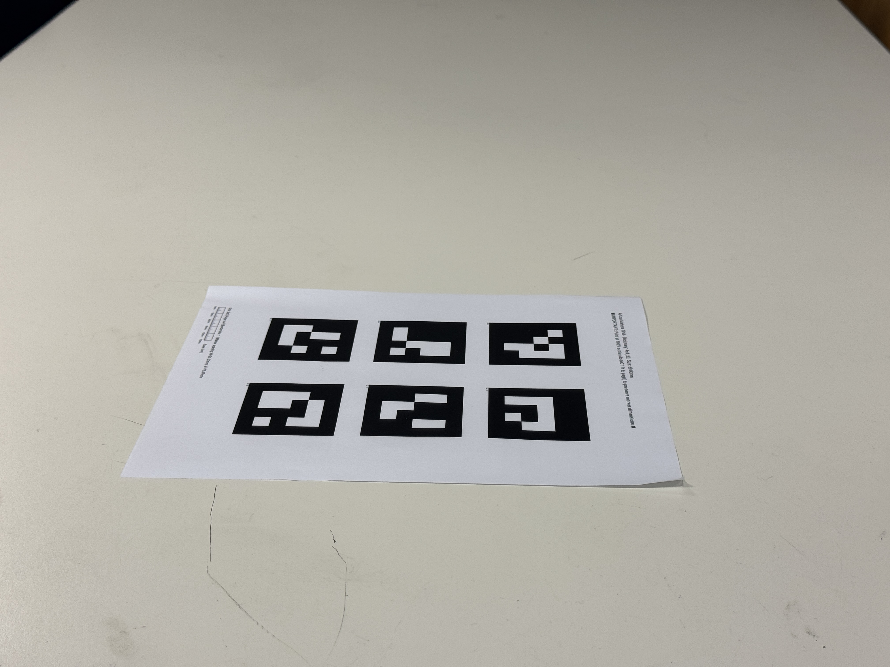
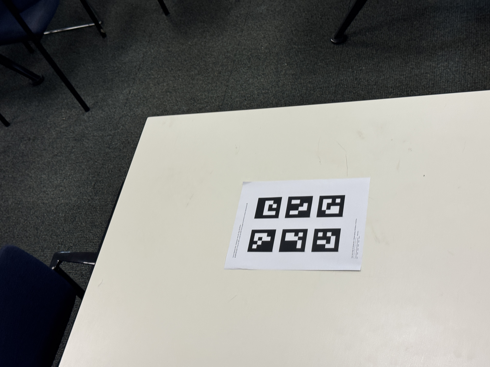
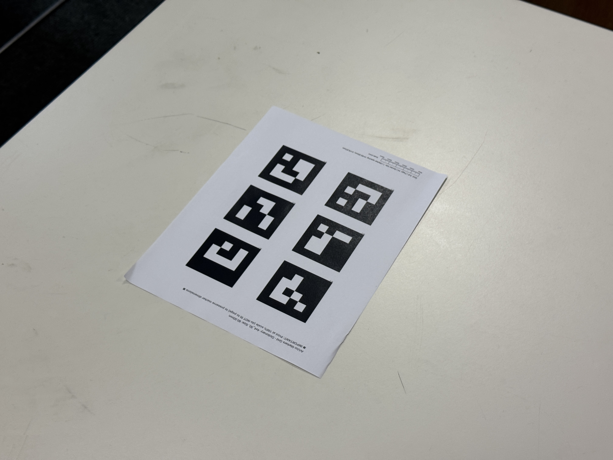
Part 0.2: Capturing a 3D Object Scan
Part 0.1 involved taking images of a 3D object next to an ArUco tag.
These images will be used later for the 3D NeRF reconstruction. The
ArUco tag was used to estimate camera pose per image (explained in Part
0.3 below). Around 30-50 images can provide a sufficient sample for the
purpose of NeRF.
A few example images of the object and ArUco tag are shown below.
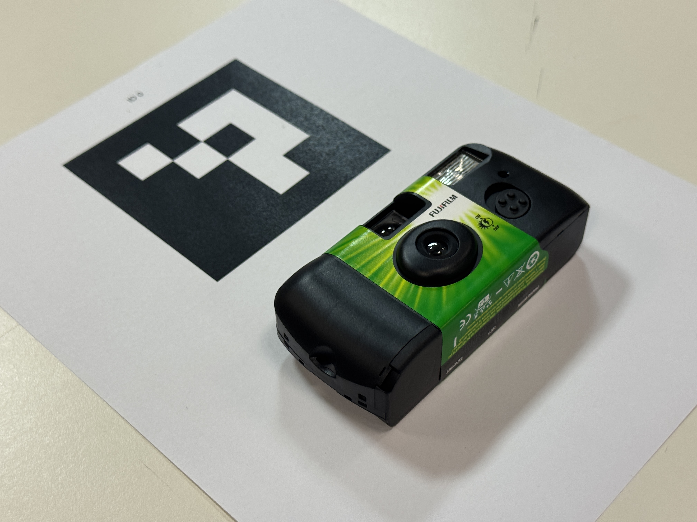
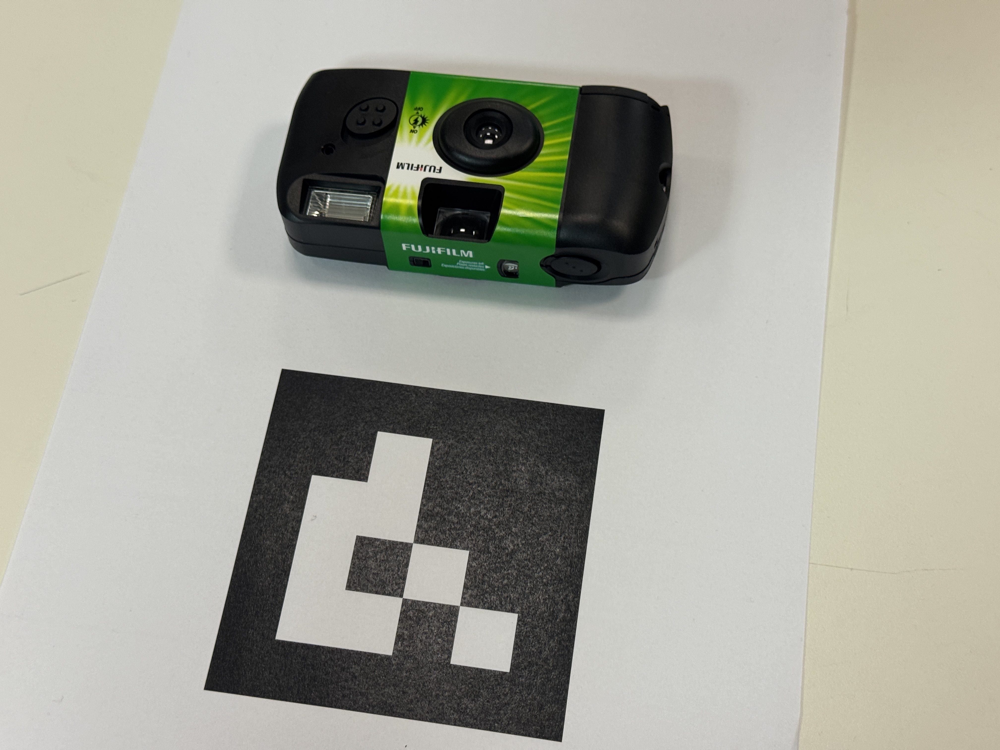
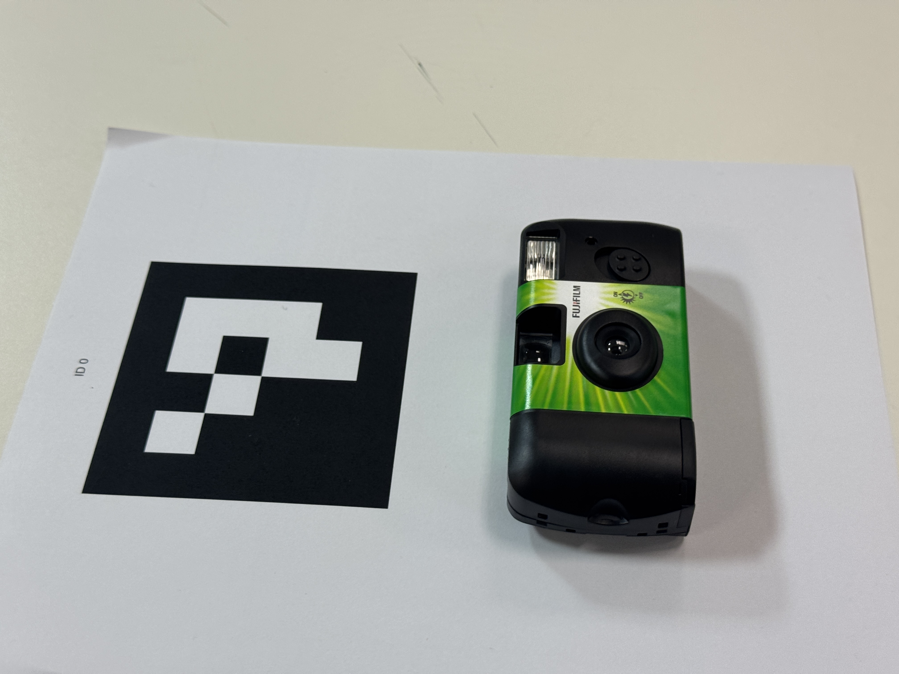
Part 0.3: Estimating Camera Pose
Part 0.1 involved estimating the camera pose for each image taken in
Part 0.2. First, the ArUco tag was detected for each image, then corners
were detected in the tag. Then the Perspective-n-Point (PnP) problem can
be solved using the camera's intrinsics matrix (Part 0.1), the
calibration distortion coefficients (Part 0.1), the corner world
coordinates (supplied), and the corner camera coordinates (detected) to
construct a world-to-camera transformation matrix. Note that ArUco tag
detection fails for some images, so those images are skipped (excluded).
The images below are visualizations of the estimated camera poses for a
number of images taken in Part 0.2.
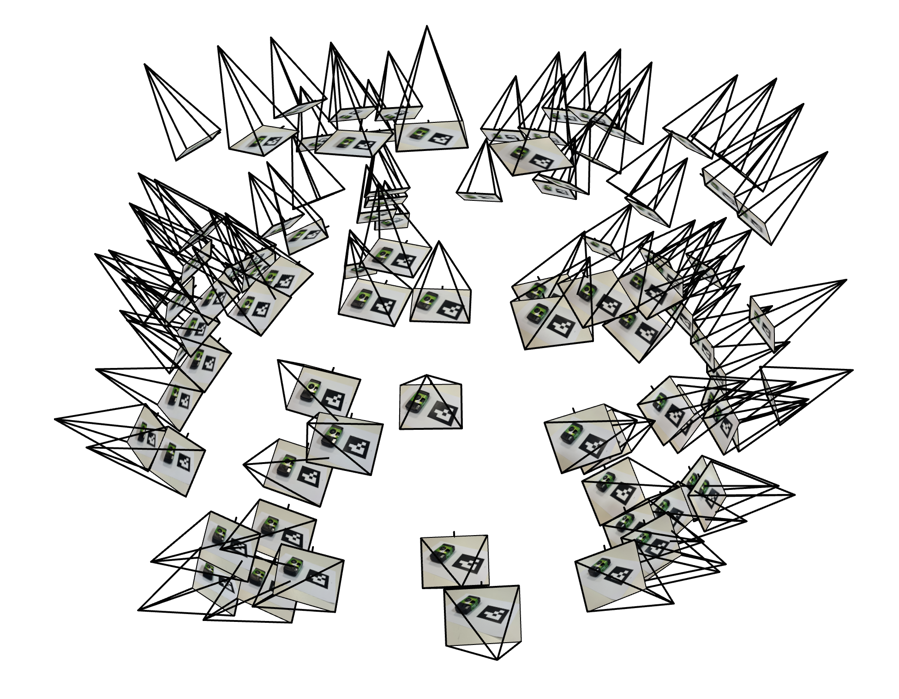
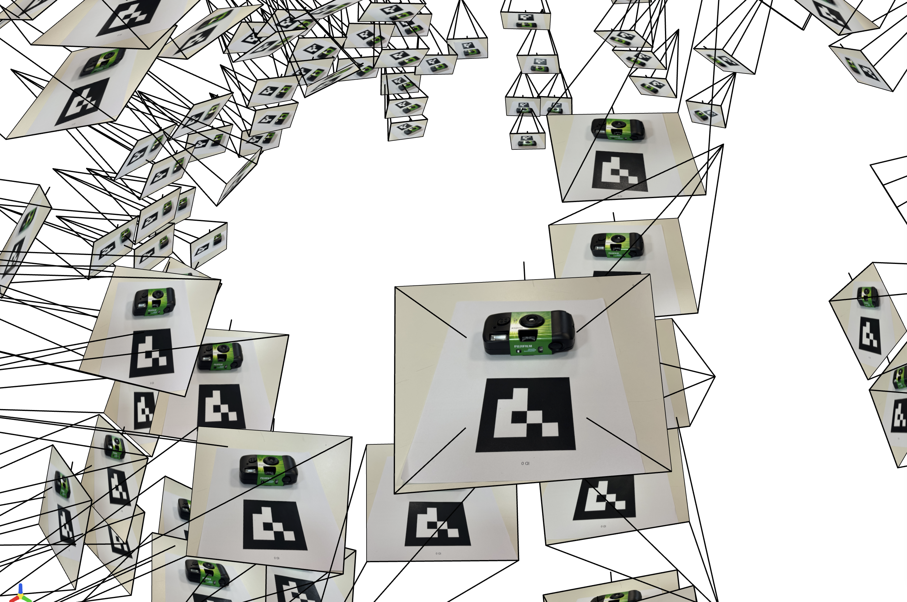
Part 0.4: Undistorting images and creating a dataset
Part 0.4 involved undistorting all images and packaging them into a .npz
dataset. Because the images were already output from a phone camera,
there was little to no noticeable effect from distortion removal.
Packaging the dataset allowed the images to be used later (Part 2) for
training a NeRF network.
Part 1: Fit a Neural Field to a 2D Image
Part 1 focused on constructing a basic NeRF-like neural net for
reconstructing a 2D image. A simple NeRF-like architecture was used for
learning a mapping from a pixel coordinate value (u, v) to a pixel color
(r, g, b).
The model includes 3 hidden linear layers and a single linear output
layer. Each hidden linear layer has width 256 and is followed by a ReLU
nonlinearity. The linear output layer is followed by a sigmoid
nonlinearity. The model also uses sinusoidal positional encoding to
encode pixel position (L=10). (PE is applied to all datapoints before
the first input layer.) The model was trained with the Adam optimizer
with a learning rate of 1e-2.
Below are snapshots of the model's predictions for two different images
throughout training as well as the PSNR of each model throughout
training.
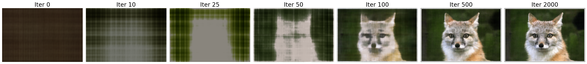
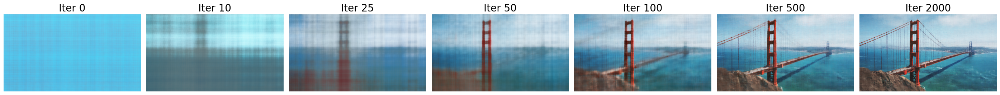
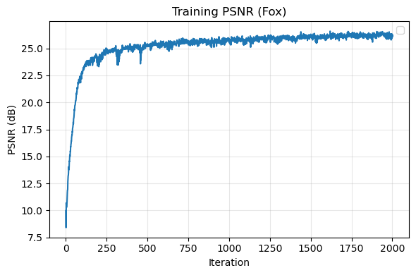
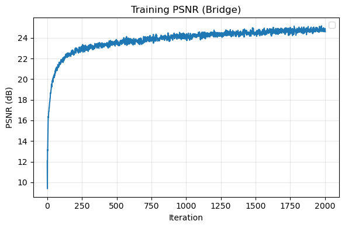
Below are the final results for different hyperparameter combinations.
The tested hyperparameters were the max positional encoding frequency
(L=2 and L=10) and the network width (W=32 and W=256).
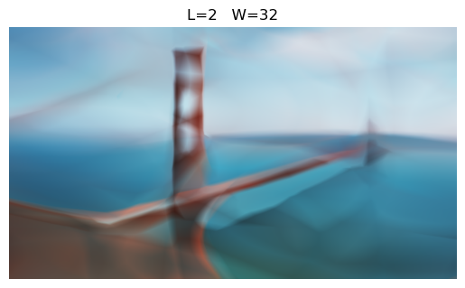
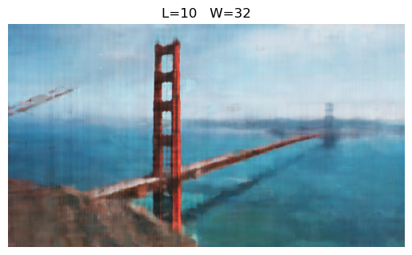
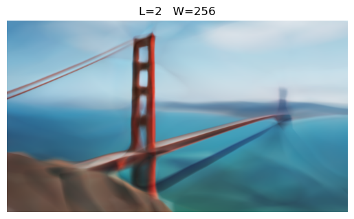
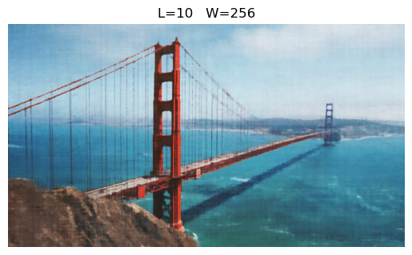
Part 2: Fit a Neural Radiance Field from Multi-view Images
Part 2 focused on implementing the actual 3D NeRF model.
Part 2.1: Create Rays from Cameras
Part 2.1 involved implementing the logic for a camera to world
coordinate conversion, a pixel to camera coordinate conversion, and a
pixel to ray (ray position and ray direction) conversion. This involved
implementing the matrix algebra in numpy to allow for fast (and batched)
conversions for use when building the NeRF model in later parts.
Part 2.2: Sampling
Part 2.2 involved implementing the logic for sampling rays and points on
rays to be used in the main NeRF training loop. This involved flattening
all images to a single list rays (1 per pixel per image) to sample from.
Each ray could then be sampled from at some interval t to generate a
list of discrete points 3D coordinates along the ray.
Part 2.3: Putting the Dataloading All Together
Part 2.3 involved implementing a simple dataloader to allow for
efficient sampling of rays and points on rays from an input dataset
during model training. This dataloader is used in the remaining parts to
train the NeRF model.
Part 2.4: Neural Radiance Field
Part 2.4 involved implementing a full NeRF model with pytorch. This
model was similar to the model from Part 1 but with a deeper
architecture as well as now predicting both an RGB color and a scalar
density for each point. Additionally, input points contained a 3D
position vector as well as a 3D direction vector to model both a point
in 3D and the viewing angle. The model I implemented uses the same
architecture as suggested in the project spec.
Part 2.5: Volume Rendering
Part 2.5 involved adding volume rendering to the NeRF model from Part
2.4. This involved sampling transparency values along each ray and
combining transparency values with colors to generate a final rendered
color.
Part 2 Results: Lego
Below is an animated GIF rendering of all images in the test set.
Below is the PSNR curve on the training and validation sets throughout
training.
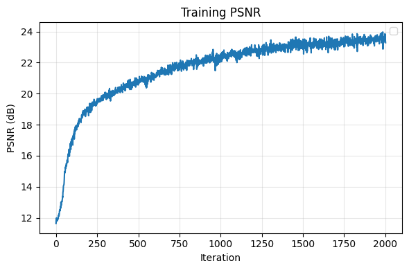
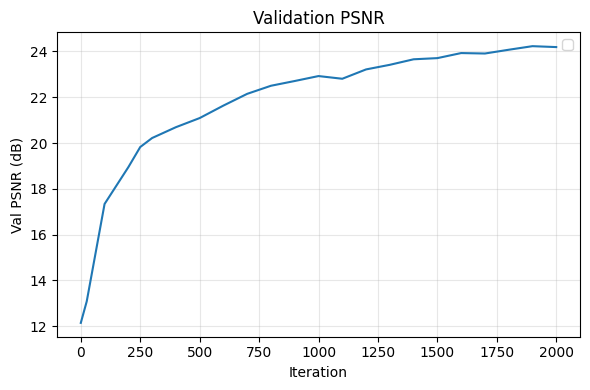
Below is an example of 100 sampled rays and the points along each ray.
Below are intermediate renderings of the validation set throughout
training.
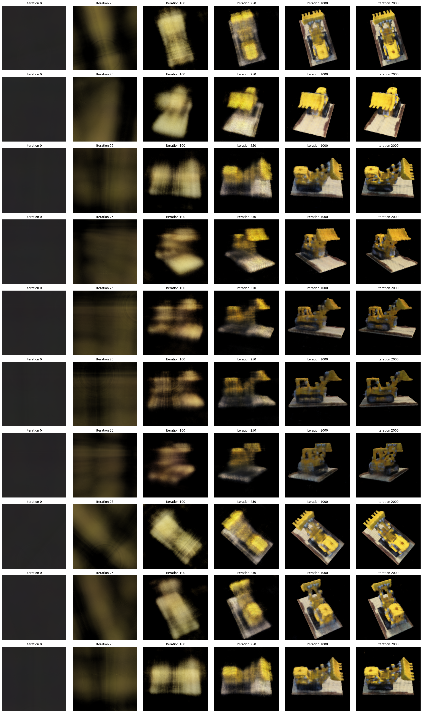
Part 2.6 Results: Training with your own data
Below is an animated GIF rendering of all images in the test set.
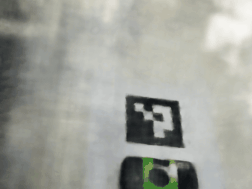
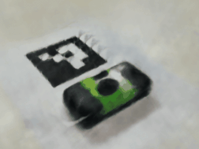
Below is the PSNR curve on the training and validation sets throughout
training. As well as the loss (MSE) throughout training.
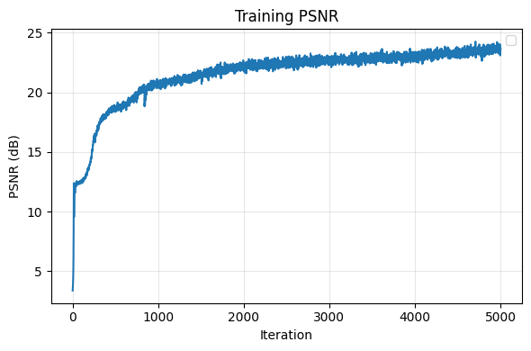
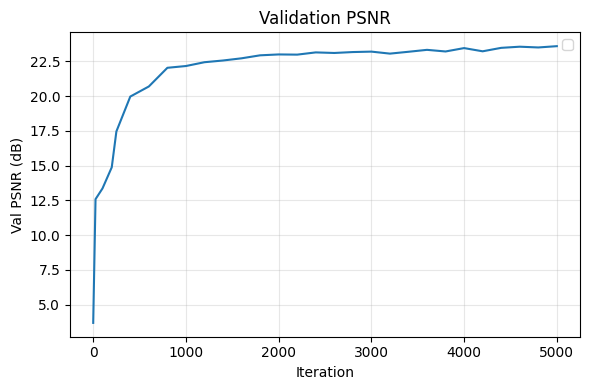
Below are intermediate renderings of the validation set throughout
training.
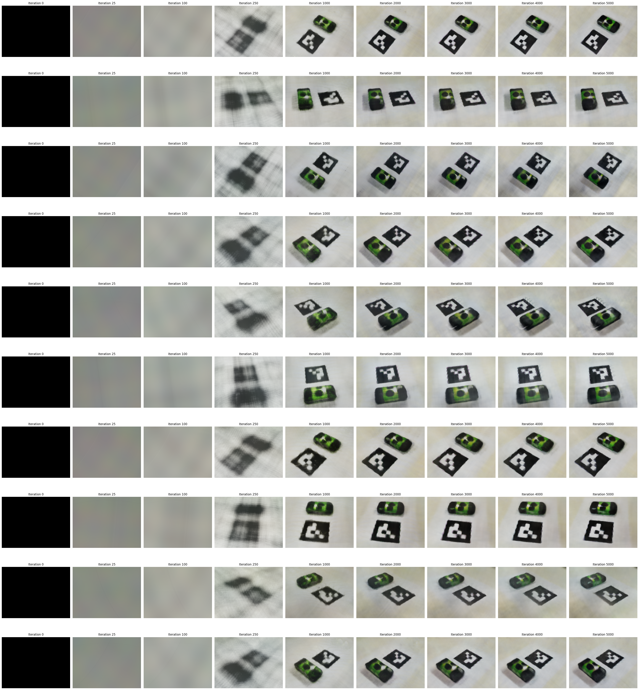